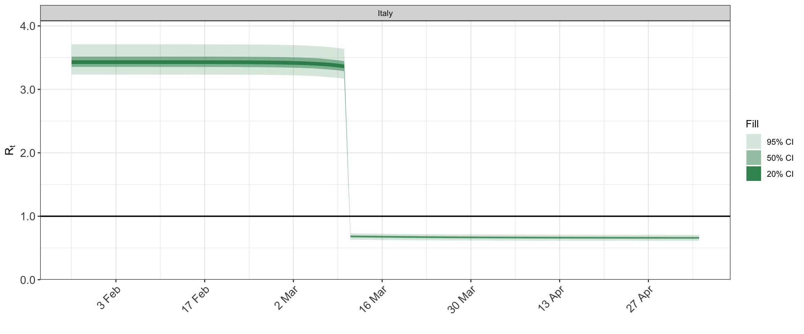
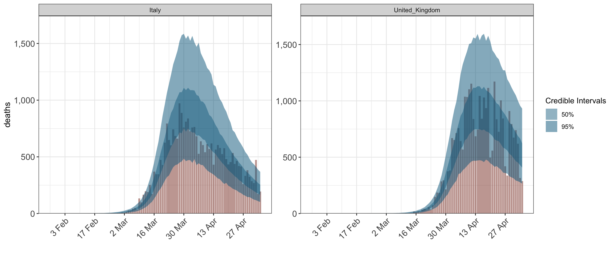
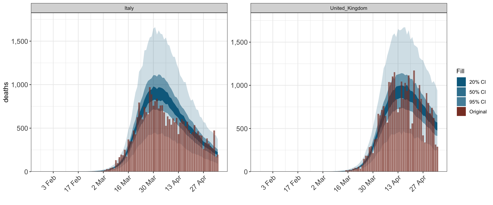
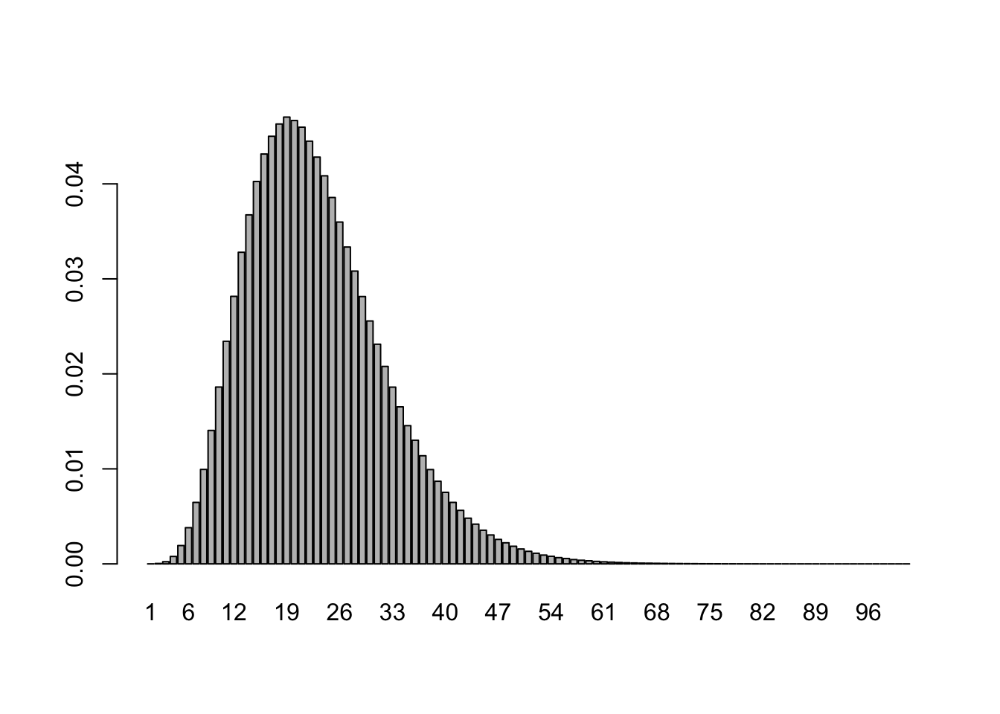
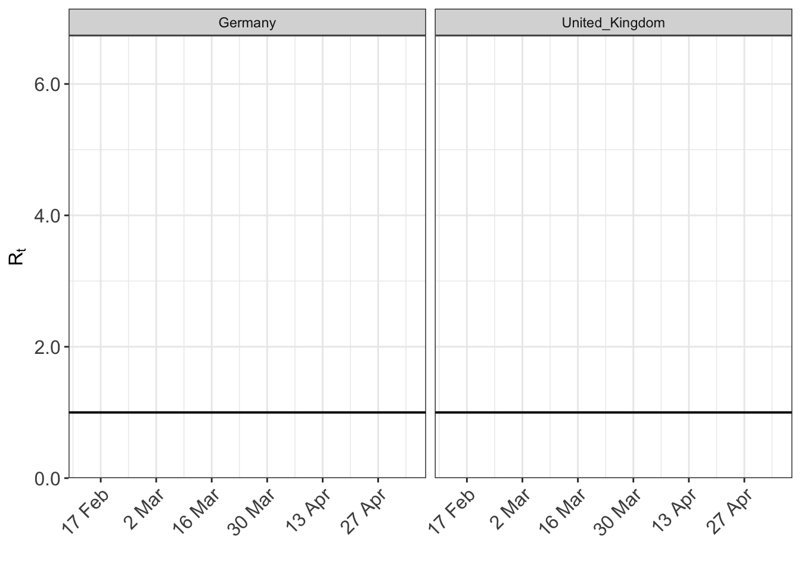
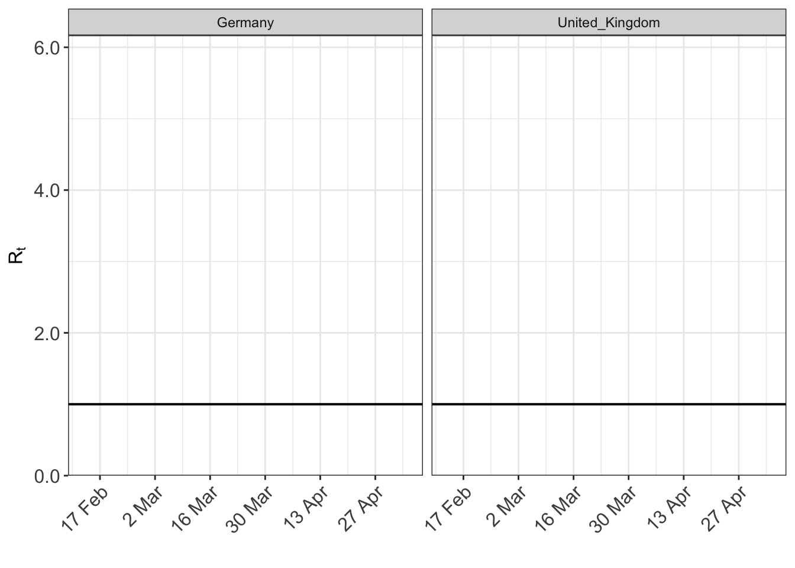

Note: This vignette is a work in progress, and will be regularly updated.
epidemia is an R-package for fitting Bayesian epidemic models in the style of Flaxman et al. (2020). Here we detail these models and give users enough information to start fitting them independently.
The document is organized as follows. Section 1 provides basic examples with minimal description, so that users can quickly get a feel for the package. Section 2 gives a formal framework for the models within the scope of the package. Understanding this framework is essential for making the most of the flexibility offered by epidemia. Section 3 discusses the details of epim; the primary model fitting function in the package. epim is designed to be flexible, and therefore has a number of arguments. This can be intimidating, so we describe these arguments in a lot of detail. Finally Section 4 highlights some of the more useful features of the package.
epidemia contains an example dataset EuropeCovid, which contains data on the daily deaths from Covid-19 recorded in 11 European countries. This will be used as a running example throughout the vignette.
The line options(mc.cores = parallel::detectCores()) is important if MCMC sampling is used, as it allows different chains to be run in parallel, rather than sequentially.
Here we provide code snippets showing basic usage of epidemia. Below considers fitting a model to the Italian data, and demonstrates usage of various arguments to epim.
# collect arguments for 'epim' args <- EuropeCovid args$algorithm <- "sampling" args$sampling_args <- list(iter=1e3,control=list(adapt_delta=0.95,max_treedepth=15),seed=12345) args$group_subset <- c("Italy") args$formula <- R(country,date) ~ 1 + lockdown args$prior <- rstanarm::normal(location=0,scale=.5) args$prior_intercept <- rstanarm::normal(location=0,scale=2) fit <- do.call("epim", args)
library(gridExtra) grid.arrange(plot_obs(fit, type="deaths"), plot_infections(fit), plot_rt(fit),nrow=3)

Often we would like to model more than one population. Here is an example of using multiple populations, where the regression for the time-varying reproduction number includes a country-specific intercept. This could also be extended to group specific slopes; for example by using (1 + lockdown | country) in place of (1 | country) in args$formula below.
# collect arguments for 'epim' args$group_subset <- c("Italy", "United_Kingdom") args$formula <- R(country,date) ~ 0 + (1|country) + lockdown args$prior_covariance <- rstanarm::decov(scale=0.1) fit <- do.call("epim", args)
plot_obs(fit, type = "deaths")

plot_rt(fit)

Flaxman et al. (2020) introduced a hierarchical Bayesian approach for epidemic modeling, and applied it to assessing the effect of non-pharmaceutical interventions on the covid-19 pandemic in 11 European countries. epidemia is designed to fit models which are largely extensions of this approach. There are however important differences which will be emphasized as we go along. The model is first described as it applies to a single population. Extensions to multiple populations are considered in the subsequent section.
Let \(t_0\) be an integer representing the first date at which infections are non-zero in the population, and let \(T\) be the number of consecutive days over which to simulate the epidemic.
The basic idea behind the model is that the observed quantities (daily deaths, incidence rates etc.) are a function of the latent infections in the population over time. These infections are in turn a function of the time-varying reproduction number. This number may be explained by a number of covariates; for example non-pharmaceutical interventions, or changes in mobility over time.
The remainder of this section is organized as follows. First, the model for the sequence of time-varying reproduction numbers is described. Infections are then modeled in terms of this sequence. Finally, the observed data is modeled as a function of these latent infections.
Let \(R := (R_{0},\ldots,R_{T})\) be a non-negative sequence representing the unadjusted time-varying reproduction number over the period considered. Intuitively, \(R_t\) measures the intensity of infectious interactions occuring in the population at time \(t_0 + t\). The term unadjusted is used to make explicit that the sequence being modeled has not been adjusted for the size of the susceptible population. This adjustment is made later in the model for infections. The sequence is parameterized as \[\begin{equation} R = 2A f\left(X\beta + Zb\right) \tag{2.1} \end{equation}\] where \(A\) is a constant, \(X\) and \(Z\) are \(T \times p\) and \(T \times q\) model matrices and where \(f\) is the standard logistic function \(f(a) := \exp(a)/(1+\exp(a))\). The \(p\)-dimensional \(\beta\) represents pooled coefficients, while the \(q\)-dimensional \(b\) represent group-specific effects. When both \(p\) and \(q\) are greater than zero, this is known as partial pooling.
The parameters \(\beta\) are assigned a prior distribution. This is flexible, and leverages the framework offered by rstanarm. Multiple different prior families are available. The group specific parameters \(b\) are treated as zero mean multivariate normal. Prior specifications are described in more detail in Section 3.1.1.4.
The vector \(R\) is latent and unobserved. The quantities we do observe are linked to \(R\) through its effect on the underlying infections, which we now describe.
Let \(I_{0}, \ldots I_{T}\) be a sequence where \(I_{t}\) represents the cumulative infections that have occurred by \(t_0 + t\). The first \(N_0\) days are seeded such that the prior on the incremental infections during this initial period is
\[
I_t - I_{t-1} \sim \text{Exponential}(1/\tau),
\]
for \(t=0,\ldots, N_0-1\) and with \(I_{-1}=0\), and where apriori \(\tau \sim \text{Exponential}(\lambda_0)\) for some \(\lambda_0 > 0\).
\(I_t\) for \(t \geq N_0\) is modeled as the exact solution to an ordinary differential equation denoted by \(I(t)\). Before describing this ODE, first let \(s := (s_1,s_2,\ldots)\) be a distribution on \(\mathbb{Z}^+\) representing the serial interval of the disease being modeled.
The ODE \(I(t)\) satisfies \[ I'(t) = \left(\frac{P-I(t)}{P} \right)R_{\lfloor t \rfloor}c_{\lfloor t \rfloor}, \] with initial condition \(I(N_0-1) = I_{N_0-1}\) and where \(c_t\) is a weighted summation over previous infections \[ c_{t} = \sum_{\tau=0}^{t} (I(\tau) - I(\tau-1)) s_{t-\tau}. \]
Given the value of \(I_{t-1}\), the exact solution to the above ODE at period \(t\) can be shown to be \[ I_t = I_{t-1} + (P - I_{t-1})\left( 1 -\exp\left(-\frac{R_tc_t}{P}\right)\right), \] where \(P\) is the population size. This satisfies intuitive properties. If \(R_t = 0\), then there are no new infections. Fixing \(c_t > 0\) and letting \(R_t \to \infty\) implies that \(I_t \to P\), i.e. everyone is infected tomorrow.
Please note that this infection model departs from Flaxman et al. (2020), and has the advantage of ensuring that cumulative infections are always bounded by the population size.
Data is observed from \(L\) observation processes \(Y_t^{(1)} \ldots Y_{t}^{(L)}\), with the subscript \(t\) ranging between \(1\) and \(T\). These processes do not need to be fully observed; i.e. data may be missing for a subset of time periods. The typical example of such data would be daily death (as used in Flaxman et al. (2020)) or incidence data. However, you are not limited to this. In general,
Extensions to more general types of data will be considered in future versions of the package.
Although the multivariate normal is an obvious candidate for the distribution of \(Y^{(l)}_t\), in practice there can be data issues leading to many observations being reported on one day, and fewer on others. To avoid being too influenced by this, the random variables \(Y^{(l)}_t\) are assumed independent and negative binomial with mean \(y_{t}^{(l)}\) and variance \[ y_t^{(l)} + \frac{{\left(y_t^{(l)}\right)}^2}{\phi_l}, \] where \(\phi_l\) is a dispersion parameter distributed \(\phi_l \sim \mathcal{N}^+(0,\sigma^2_{\phi_l})\) for some hyperparameter \(\sigma^2_{\phi_l} > 0\). The expected value \(y_{t}^{(l)}\) is then modeled as a function of
To give intuition on the above quantities, suppose for now that the \(l\)th observation process recorded daily death counts. Then \(\pi^{(l)}_{t}\) is the probability, conditional on a death being recorded today, that this individual was infected exactly \({t}\) days prior. \(\alpha_{l}\) is then the mean infection fatality ratio (IFR) for the given population.
The functional form for \(y_{t}^{(l)}\) is then simply \[ y_{t}^{(l)} := \alpha_l \sum_{\tau=0}^{t-1} (I_{\tau} - I_{\tau-1})\pi^{(l)}_{t-\tau}. \] The distribution \(\pi^{(l)}\) is treated as known, however in future versions of epidemia we may allow it to be learnt. One possibility in this direction would be to view \(\pi^{(l)}\) as a discretization of a continuous parametric distribution. The parameters could be given priors and learnt. The Gamma distribution is a suitable candidate for this.
The proportion \(\alpha_l\) is treated as unknown, and given a normal prior truncated to the unit interval. To be precise \[\begin{equation} \alpha_l \sim \mathcal{N}_{[0,1]}(\mu_l, \sigma^2_{\alpha_l}), \tag{2.2} \end{equation}\] for given hyperparameters \(\mu_l\) and \(\sigma^2_{\alpha_l}\). In future versions of epidemia, these proportions may instead be assigned Beta priors.
Extending to multiple populations is done by allowing some parameters to be pooled, while keeping others group specific. Suppose now that there are \(M\) non-overlapping populations with differing start dates \(t^{(m)}_0\) and epidemic lengths \(T_m\).
We begin by discussing the model parameters outside of (2.1). We replace (2.2) with \[ \alpha_{l,m} \sim \mathcal{N}_{[0,1]}(\mu_{l,m}, \sigma^2_{\alpha_l}), \] so that (2.2) is replicated for each group, except that each observation type has a shared hyperparameter \(\sigma^2_{\alpha_l}\). The dispersion parameters \(\phi_l\) are on the other hand pooled, and \(\pi^{(l)}\) are assumed the same for each group.
The remaining parameters relate to the parameterisation of the time-varying reproduction numbers. Collect these into a vector \(R\) with total length \(T' := \sum_{m=1}^M T_m\), and consider the parameterization of \(R\) in terms of covariates given in (2.1). This approach allows flexible pooling of parameters through \(\beta\), while still permitting between group variation using the group-effects \(b\).
epidemia is designed to fit the models described in Section 2. In particular, it uses R’s formula interface to parameterize the time-varying reproduction number in terms of a number of covariates (see (2.1)). The implementation of this shares many similarities with the stan_glmer function in rstanarm and the glmer function in lme4.
epim
As mentioned in the introduction, the primary model fitting function in epidemia is epim. We now describe this function in depth. Section 3.1.1 details the formal arguments to epim, and links them where possible to the mathematical notation used in Section 2.
Table 3.1 lists the formal arguments to epim.
| Arguments | Description | Class |
|---|---|---|
| formula | Specifies the model (2.1) for the unadjusted time-varying reproduction number. See glmer for more details. | formula |
| data | The data used in the model specified by ‘formula’. Each term in formula must have a corresponding column in data. See glmer for more details. |
data.frame |
| obs | All available observations and hyperparamters for the observation model (Section 2.1.3). Each element of obs represents its own type of observation. More on this below. |
list |
| pops | Population of each modeled group. The first column represents the group and the second giving the corresponding population. | data.frame |
| si | A vector representing the serial interval of the disease. This should be a simplex vector - i.e. all elements are non-negative and sum to one. The \(n\)th element gives the probability an individual infects another \(n\) days after disease onset. | numeric |
| seed_days | Number of days \(N_0\) for which to seed infections at the start of the epidemic. Defaults to 6L | integer |
| algorithm | The algorithm used to fit the model. Must be one of ‘sampling’, ‘meanfield’ or ‘fullrank’, which correspond to rstan sampling methods. See sampling and vb. |
character |
| group_subset | An optional vector specifying a subset of groups to model. Elements should correspond to the group levels specified through the data argument. |
character |
| center | If TRUE then all covariates in (2.1) are centered (shifted to have mean zero). WARNING: the priors are then interpreted as priors on the centered covariates. Defaults to FALSE. |
logical |
| prior | The prior distribution on \(\beta\), excluding any possible intercept. | list |
| prior_intercept | Prior on the intercept if one has been specified in the model implied by formula. |
list |
| prior_covariance | Prior on the covariance matrix of the group-specific parameters \(b\). Only used if the formula has at least one ‘random-effects’ term, i.e. (a|b). |
list |
| r0 | Set the constant \(A\), introduced in (2.1). This will determine the maximum possible unadjusted \(R_t\) (to be clear, not neccessarily \(A\)). Defaults to 3.28. | numeric |
| prior_phi | Prior on the vector \((\phi_1, \ldots, \phi_L)\), the parameter controling variability of the observations around their mean values. | list |
| prior_tau | Prior on \(\tau\), the parameter controling the variability in the seeded cases. | list |
| prior_PD | Flag whether to sample from the prior distribution. Same as stan_lm. Defaults to FALSE. |
logical |
| sampling_args | An (optional) named list of parameters to pass to the rstan function used for model fitting. See sampling and vb for details of possible arguments. | list |
Most of the arguments listed in Table 3.1 are self-explanatory. However the first three and also the prior arguments require further explanation. We tackle each of these in turn.
formula ArgumentThis specifies the model for the unadjusted time-varying reproduction number, given by (2.1). The LHS takes the form R(group,date). This is just syntactic sugar to make explicit that the model is for the reproduction number for a given population and date.
The right hand side can include both pooled and unpooled coefficients. For more details on interpreting different formulas, please see here.
We briefly give an intepretation for specific models in the context of the Europe data. First note that terms in the formula must correspond to column names in data, which are
colnames(EuropeCovid$data)
## [1] "country" "date"
## [3] "schools_universities" "self_isolating_if_ill"
## [5] "public_events" "lockdown"
## [7] "social_distancing_encouraged"Suppose for simplicity that the value of all covariates at the start date of each group is zero, so that the intercept can be interpreted as determining the starting reproduction number \(R_0\) of the disease (this is indeed the case for the Europe example). Then
R(country, date) ~ 0 + lockdown This is a no-intercept model. The effect is to set an exact \(R_0\) which is the same for all countries. This potentially changes at dates for which lockdown become non-zero (i.e. after the intervention come into place). The starting value is precisely \(A\) defined in (2.1).
R(country, date) ~ 1 + lockdown The intercept is the same for all countries. This implies a common distribution for \(R_0\), which is set by prior_intercept.
R(country, date) ~ (1 | country) + lockdown A country-specific intercept allows the distribution of \(R_0\) to depend on the country. The prior on these is controlled by both prior_intercept and prior_covariance.
data argumentThis argument provides any data specified by the formula. It must contain at least two columns which give the modeled populations and simulation dates. In the Europe example, the columns country and date serve this purpose. The country column must be coercible to class factor, and the levels of this column determine the possible populations to model.
data <- EuropeCovid$data levels(data$country)
## [1] "Austria" "Belgium" "Denmark" "France"
## [5] "Germany" "Italy" "Norway" "Spain"
## [9] "Sweden" "Switzerland" "United_Kingdom"If specified, only the populations given in the group_subset argument are modeled. Otherwise, all levels are used.
The dates column must be coercible to a ‘Date’ vector. Dates must be consecutive for each modeled group. The first date is taken to be the start date \(t^{(m)}_0\) of the epidemic in that population, and the final date is taken to be \(t^{(m)} + T\).
agg <- function(x,f) aggregate(x$date, by=list(x$country), FUN=f) setNames(cbind(agg(data, min), agg(data, max)[,2]), c("country", "start", "date"))
## country start date
## 1 Austria 2020-02-22 2020-05-05
## 2 Belgium 2020-02-18 2020-05-05
## 3 Denmark 2020-02-21 2020-05-05
## 4 France 2020-02-07 2020-05-05
## 5 Germany 2020-02-15 2020-05-05
## 6 Italy 2020-01-27 2020-05-05
## 7 Norway 2020-02-24 2020-05-05
## 8 Spain 2020-02-09 2020-05-05
## 9 Sweden 2020-02-18 2020-05-05
## 10 Switzerland 2020-02-14 2020-05-05
## 11 United_Kingdom 2020-02-13 2020-05-05Following Flaxman et al. (2020), the start dates shown above are thirty days prior to the first date for which more than 10 cumulative deaths were observed in the given country. They are not learnt by the model, rather they are assumed and specified by the user.
obs argumentA list of lists giving available observations from the \(L\) observation processes introduced in Section 2.1.3, and hyperparameters for the observation model. These hyperparameters are \(\{\mu_{l,m}\}\) and \(\{\sigma_{\alpha_l}\}\). The \(l\)th element of obs must itself be a named list containing the following three elements.
odata: A three column dataframe representing observations from the \(l\)th observation process. The first column represents group membership and must be coercible to class factor. The second column indicates the observation date and must be coercible to class Date. The third column contain the actual data.
rates: A named list specifying the prior for the proportion of infected individuals recorded as an observation. For example if recording deaths this would be some estimate of each groups infection fatality ratio (IFR). The priors are assumed normal. Contains:
means: A two column dataframe giving the hyperparameters \(\mu_{l,m}\), i.e. the estimated mean proportion of infected individuals recorded as an observation. First column represents the group, while the second the corresponding proportion.
scale: The standard deviation \(\sigma_{\alpha_l}\) around the mean values. Default is 0.1.
pvec: The probability vector \(\pi_l\) described in Section 2.1.3.
The EuropeCovid data contains an example of the obs argument. It uses only one type of observation, death data, and so \(L=1\) in this case, and of course EuropeCovid$obsmust has length one.
deaths <- EuropeCovid$obs$deaths
We can inspect the observed deaths as follows.
head(deaths$odata)
## country date deaths
## 1 Austria 2020-02-22 0
## 2 Austria 2020-02-23 0
## 3 Austria 2020-02-24 0
## 4 Austria 2020-02-25 0
## 5 Austria 2020-02-26 0
## 6 Austria 2020-02-27 0It is also instructive to look at $rates component.
deaths$rates
## $means
## country ifr
## 1 Denmark 0.010207470
## 2 Norway 0.009149564
## 3 Sweden 0.010311043
## 4 United_Kingdom 0.010350438
## 5 Italy 0.012449626
## 6 Spain 0.010783873
## 7 Austria 0.010388226
## 8 Belgium 0.010959878
## 9 France 0.012556187
## 10 Germany 0.012332443
## 11 Switzerland 0.010213453
## 12 Greece 0.011799229
## 13 Portugal 0.011725868
## 14 Netherlands 0.010289760
##
## $scale
## [1] 0.1This shows the assumed values for the hyperparameters \(\alpha_{l,m}\) and \(\sigma_{\alpha_l}\) described above. Note the differing prior expected value of the IFR between groups. This is partially a result of differing age demographics.
Finally, we visualise the distribution of time from disease onset to death.
barplot(deaths$pvec, names.arg=1:101)
 Following Flaxman et al. (2020), this is a discretization of the distribution of \(\text{Gamma}(1.35,3.77) + \text{Gamma}(4.94,3.60)\), where the notation \(\text{Gamma}(\alpha, \theta)\) refers to a Gamma random variable with shape \(\alpha\) and scale \(\theta\).
Prior distributions should be specified for the parameters in (2.1), and for additional model parameters.
Please note that the current default priors may not be appropriate, and should not be relied upon. In future versions of the package, we hope to set good default priors.
The priors for \(\beta\) (see (2.1)) are set using the prior and prior_intercept arguments. These will only have an effect if the formula specifies covariates and an intercept respectively. These function similarly to the same arguments instan_lm. To understand which families can be used please refer to rstanarm’s priors.
There is one caveat: which is that we offer additional priors. Currently there is just one, shifted_gamma, which can only be used for the prior argument. The addition of this prior is motivated by the priors used in Flaxman et al. (2020). This essentially allows for
\[\begin{equation}
\beta_i \sim \text{Gamma}(\alpha,\theta) - \eta,
\end{equation}\]
where \(\alpha\) and \(\theta\) are shape and scale parameters, and \(\eta\) is a shift to allow for priors with support below zero.
Consider a single ‘random-effects’ term in the formula. A good example would be (1 + lockdown | country). For each group the intercepts and slopes are treated as zero-mean multivariate normal with unknown covariance matrix \(\Sigma\). For our example term, fix one level implied by the factor country, say "Italy". For this group, there are two coefficients - a random intercept for Italy, and a random slope. Therefore \(\Sigma\) has dimension \(2 \times 2\). Coefficients for different groups are treated as independent.
epidemia borrows from rstanarm and uses the decov prior for \(\Sigma\). This decomposes \(\Sigma\) into a variance vector and a correlation matrix. An LKJ prior is used on the correlation matrix, while the variance is decomposed into the product of a simplex vector and the trace of \(\Sigma\). The simplex vector is given a symmetric Dirichlet prior, which the trace is once again decomposed as \(tr(\Sigma) = J \kappa\), where \(J\) is the order of \(\Sigma\). Finally \(\kappa\) is assigned a scale-invariant prior - specifically a Gamma distribution with give shape and scale hyperparameters. For more information on this, please see rstanarm priors and this vignette.
When the left hand side of the formula has only one term (for example (1 | country)), this prior on the covariance simplifies considerably. \(\Sigma\) simply reduces to \(\kappa\), which has a gamma prior.
Here we demonstrate how to specify different prior distributions in practice, using the Europe data restricted to Germany and the United Kingdom as an example. In particular, we demonstrate the utility of the prior_PD flag for sampling from the prior predictive distribution. This allows you to easily visualise the prior assumptions on the reproduction number. Various methods that can be used on fitted models (epimodel) are demonstrated.
args$group_subset <- c("Germany", "United_Kingdom")
Similar to Flaxman et al. (2020), we specify the following model.
args$formula <- R(country,date) ~ (1 | country) + schools_universities + self_isolating_if_ill + public_events + lockdown + social_distancing_encouraged
This model allows a separate initial reproduction number for each country, and includes 6 different non-pharamceutical interventions (NPIs) to explain the changes to the number over time.
Here we focus on specifying the prior argument. This controls the prior distribution of the coefficients in the regression. Any of the rstanarm priors can be used. We have also added a shifted_gamma prior to replicate the prior in Flaxman et al. (2020).
To quickly visualise the effect of the prior distribution we can used the prior_PD flag to epim. If TRUE epim will sample all parameters from their prior distribution. We specify the prior for the intercept as follows.
args$prior_intercept <- rstanarm::normal(location=0, scale = 0.5)
args$prior <- rstanarm::normal(scale = 0.5) args$algorithm <- "sampling" args$sampling_args <- list(iter=200,control=list(adapt_delta=0.95,max_treedepth=15)) args$prior_PD <- TRUE fit <- do.call("epim", args) plot_rt(fit, levels = c(20,40,60,80,95))

And example of using a shifted gamma prior…
args$prior <- shifted_gamma(shape=1/6, scale=1, shift = -log(1.05)/6) fit <- do.call("epim", args) plot_rt(fit, levels = c(20,40,60,80,95))

The above plots give a good indication of the implications of different prior families.
epimodels
Fitting the model to the data…
args$prior_PD = FALSE fit <- do.call("epim", args)
Printing the object gives a brief summary of estimated coefficients and standard errors. This is very similar to the print method for stanreg objects.
print(fit, digits = 2)
You can retrieve the prior distributions used easily with the following.
prior_summary(fit)
## Priors for model 'fit'
## ------
## Intercept (after predictors centered)
## ~ normal(location = 0, scale = 0.5)
##
## Coefficients
## ~ gamma(shape = [0.17,0.17,0.17,...], scale = [1,1,1,...], shift = [-0.0081,-0.0081,-0.0081,...])
##
## Covariance
## ~ decov(reg. = 1, conc. = 1, shape = 1, scale = 0.1)
## ------
## See help('prior_summary.epimodel') for more detailsOften it will be useful to obtain the MCMC draws for the raw parameters. This can be done using as.matrix, as.array, or as.data.frame. Here is an example of using as.matrix.
draws <- as.matrix(fit) draws[1:4,1:4]
## parameters
## iterations (Intercept) schools_universities self_isolating_if_ill public_events
## [1,] -0.7802573 0.1443288 0.37164930 2.212096
## [2,] -0.6424173 0.3956533 0.07403738 2.184111
## [3,] -0.4671127 0.4843454 0.06993168 2.146082
## [4,] -0.6158538 0.1869997 0.12741269 2.580356Flaxman, Seth, Swapnil Mishra, Axel Gandy, H Juliette T Unwin, Thomas A Mellan, Helen Coupland, Charles Whittaker, et al. 2020. “Estimating the effects of non-pharmaceutical interventions on COVID-19 in Europe.” Nature. https://doi.org/10.1038/s41586-020-2405-7.